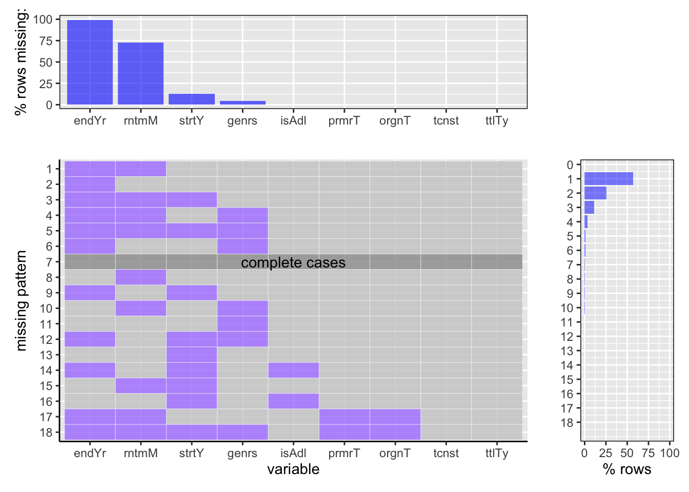
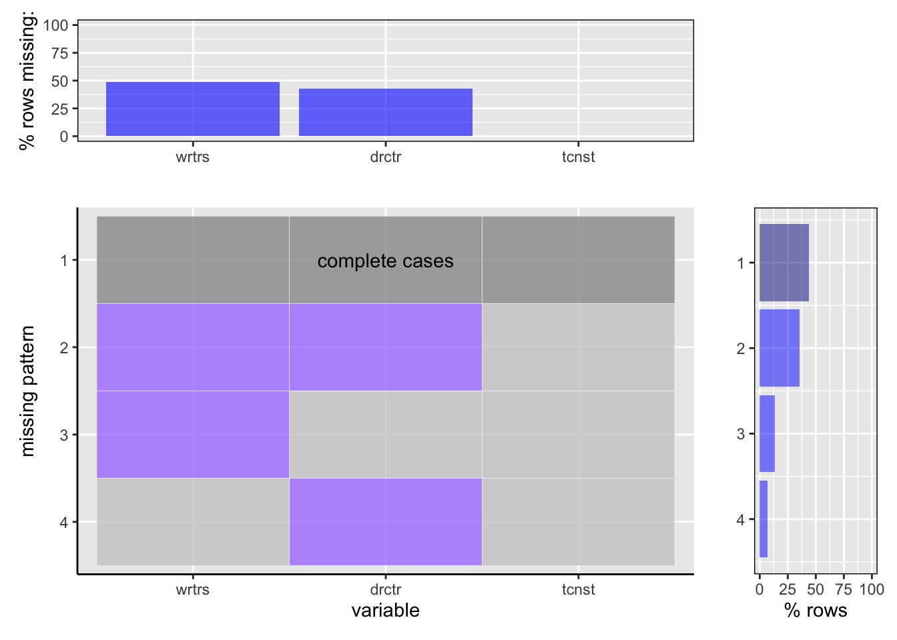
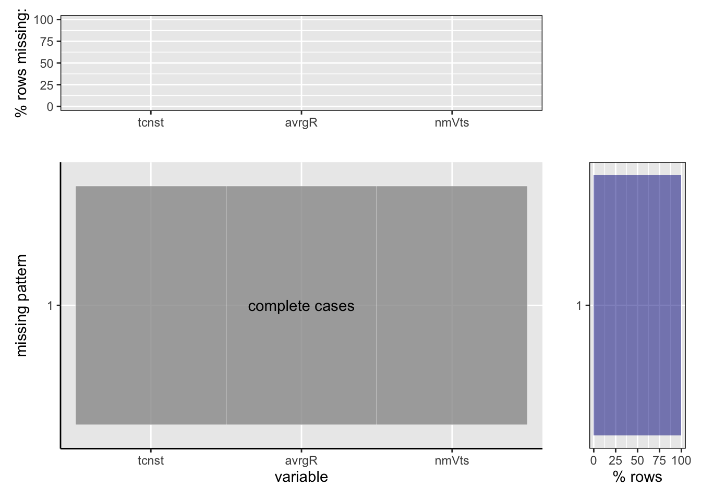

Chapter 4 Chapter 4 Missing values
4.1 Basics

We studied the percentage of missing values in the ‘title.basics.tsv.gz’ through the graph plotted above.
Analysis:
1. It is observed that out of all the total rows, almost ~99% of row are there which does not have the value for the end year of the title. This is followed by ~74% rows where runtime in minutes of the title is not available. Moreover, there are only ~12% and 5% rows respectively that does not contain the values for the start year and genre of the corresponding title.
2. Very insignificant percentage of missing values are observed for columns that provides information if the title is adult or not, what is the primary title name, and original title name.
3. Interestingly, there are no missing values for title type and the alphanumeric constant of the title.
4.Among all the rows that has missing values, majority of the rows has missing values for both end year as well as runtime of the title combined. This constitutes for ~56% rows.
5.Moreover, there are 25% rows which has solely end year missing values, whereas ~12% rows where end year is missing along with runtime and start year of the title. There are minimal percentage of rows which witnesses complete cases, that is, only around 1% of rows has no missing values in them.
From this dataset, we have utilized the information about the start year of title, title type, and whether the title is adult or not. Therefore, to handle the missing values of the start year, we have dropped the rows where there were no start year mentioned. Further, to handle the rows with missing values for isAdult or not, we again dropped those rows from the dataset. This detailed information about this transformation is explained in the ‘Data Transforamtion’ chapter. Finally, as there are no missing values for the title type column thus we do not have to worry about it.
4.2 Crew

The graph above manifests the percentage of missing data in the ‘title.crew.tsv.gz’ dataset.
Analysis:
1. It is observed from the top-most graph that approximately 50% of the total rows in the dataset has missing values for the writers and 40% of the total rows of the dataset contains missing values for the directors. However, the the alphanumeric identifier is present for all the rows irrespective if the writer or director is missing or not.
2. The main graph reveals that there are 4 different patterns in the data, likewise, the rows where:
i) only directors are missing,
ii) only writers are missing,
iii) both writer and directors are missing
iv) there are no missing values
3. It is noted from the right-most graph that the percentage of rows where both director and writers are missing is significantly more than the percentage of rows where only director or only writer is missing.
4. It is interpreted that out of the 50% of the rows where writers are missing, there ~37% of the rows where the writers values are missing along with some directors values. Whereas there are only ~13% rows where solely writers are missing. Similarly, out of the 40% of the rows where directors values are missing, there are ~37% rows where the directors are missing along with the writers while only ~3% rows where solely directors values are missing.
5. Notably, a total of 44% of the rows in the dataset have complete cases patterns, meaning there are no missing values in this proportion of rows.
We have made use of the ‘title.crew.tsv.gz’ dataset to answer the question 2 and 3 of our objective. We primarily use the director and writer values provided in the above dataset, therefore, it is very necessary to handle the missing values in these columns. To do so, we simply dropped the rows which had the missing values, that is, “NA” values and then utilized the two columns. The detail about this transformation is explained in the ‘Data Transformation’ chapter.
4.3 Ratings

The above graph reveals the information about missing values in the ‘title.ratings.tsv.gz’. This dataset contains the following information:
Analysis:
1. It is clearly seen that there are no values missing in the ‘title.ratings.tsv.gz’ dataset. There is only 1 pattern found, that is, all the columns of the dataset have complete and consistent values. Therefore, we have 100% complete cases for the average ratings and number of votes for all the titles given in the dataset and there are no missing patterns.
We are utilizing the ‘title.ratings.tsv.gz’ majorly to answer all of our objective questions. It is thus observed that we do not have to worry about any missing patterns for this datatset as there are none.